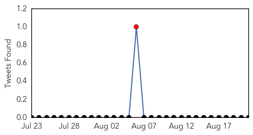
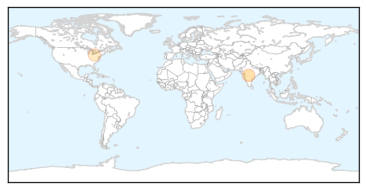
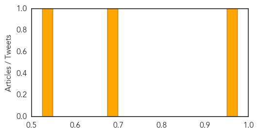

Pertussis
30-Day Web Trend
0 alerts, 0 warnings

30-Day Twitter Trend
1 alerts, 0 warnings

Article Locations
Article Confidences
Top Articles:
Top Tweets:
-
No tweets found for Aug 21, 2015
Dengue Fever
30-Day Web Trend
0 alerts, 0 warnings

30-Day Twitter Trend
0 alerts, 0 warnings

Article Locations

Article Confidences

Top Articles:
- 0.956
- Institute for Translational Medicine GMO Mosquitoes to Prevent Dengue Fever
- 0.943
- No respite in sight from monsoon-related ailments
- 0.922
- Health Ministry reviews preparedness on Dengue in Delhi
- 0.909
- Health Min holds review meet on prevention of dengue in Delhi
- 0.881
- Delhi Government Asked to Take Measures to Spread Awareness on Dengue Prevention, Control
- 0.847
- Google Flu Trends Will Now Report Directly To Health Organizations
- 0.818
- Nicaragua and ALBA – working out a truly democratic health system
- 0.809
- Stay alert to prevent dengue outbreak, civic bodies told
- 0.763
- Dengue: Authorities to inspect four hospitals including AIIMS
- 0.600
- Six NCKU students contract dengue fever
Top Tweets:
-
No tweets found for Aug 21, 2015